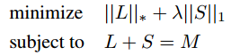

MSAR Project
2014-06-19
※ Running time is about three times the duration of the music.
Original Video |
Extracted Vocal(binary mask on) |
Original Music |
Extracted Vocalbinary mask on (better) |
Extracted Vocalno mask |
Original Music |
Extracted Vocalbinary mask on |
Extracted Vocalno mask |
True Vocal |
||
Proposed by Candes et al
“Robust principal component analysis?,” J. ACM, vol. 58, pp.11:1–11:37, Jun. 2011.
Recover low-rank matrix

Solve by inexact Augmented Lagrange Multiplier Method
MIR-1K dataset + BSS-EVAL metrics